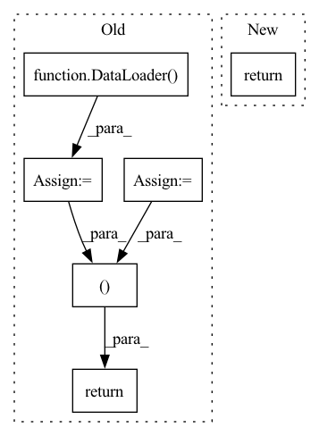

Pattern ID :8475

Before Change
train_data = TensorDataset(train_inputs, train_type_ids, train_masks, \
train_labels)
train_sampler = RandomSampler(train_data)
train_dataloader = DataLoader(train_data, sampler=train_sampler, \
batch_size=self.batch_size)
// Convert all validation inputs and labels into torch tensors
validation_inputs = torch.tensor(valid_input)
validation_type_ids = torch.tensor(valid_type_id)
validation_masks = torch.tensor(valid_att_mask)
validation_labels = torch.tensor(valid_label)
// Create the DataLoader for our validation set.
validation_data = TensorDataset(validation_inputs, validation_type_ids,\
validation_masks, validation_labels)
validation_sampler = SequentialSampler(validation_data)
validation_dataloader = DataLoader(validation_data, \
sampler=validation_sampler, \
batch_size=self.batch_size)
return train_dataloader, validation_dataloader
def get_accuracy(self, preds, labels):
Compute the accuracy of binary predictions.
After Change
sampler = SequentialSampler(data)
dataloader = DataLoader(data, sampler=sampler, batch_size=self.batch_size)
return dataloader
def get_accuracy(self, preds, labels):
Compute the accuracy of binary predictions.
In pattern: SUPERPATTERN
Frequency: 3
Non-data size: 6
Instances
Fragment ID: 29443475
Project Name: yuanbit/finbert-qa
Commit Name: a4844511b0075db8aaf855486bb22046ba74669c
Time: 2020-04-11
Author: bithiahy@gmail.com
File Name: src/finbert_qa.py
M Class Name: PointwiseBERT
N Class Name: PointwiseBERT
M Method Name: get_dataloader(3)
N Method Name: get_dataloader(1)
M Parent Class:
N Parent Class:
M File Name: src/finbert_qa.py
N File Name: src/finbert_qa.py
M Start Line: 176
M End Line: 224
N Start Line: 150
N End Line: 182
'>
Before Change
trainset = CIFAR10("./dataset", train=True, download=True, transform=transform)
testset = CIFAR10("./dataset", train=False, download=True, transform=transform)
trainloader = DataLoader(trainset, batch_size=32, shuffle=True)
testloader = DataLoader(testset, batch_size=32)
num_examples = {"trainset": len(trainset), "testset": len(testset)}
return trainloader, testloader, num_examples
// //////////////////////////////////////////////////////////////////////////////////////////////////////////////////////////////////////////////////////////
// 2. Federation of the pipeline with Flower
After Change
trf = Compose([ToTensor(), Normalize((0.5, 0.5, 0.5), (0.5, 0.5, 0.5))])
trainset = CIFAR10("./data", train=True, download=True, transform=trf)
testset = CIFAR10("./data", train=False, download=True, transform=trf)
return DataLoader(trainset, batch_size=32, shuffle=True), DataLoader(testset)
// //////////////////////////////////////////////////////////////////////////////////////////////////////////////////////////////////////////////////////////
'>
Fragment ID: 29443463
Project Name: adap/flower
Commit Name: a56f318f01498776d0421fa0d6efed38d5f13a05
Time: 2022-03-21
Author: daniel@adap.com
File Name: examples/quickstart_pytorch/client.py
M Class Name: AnonimousClass
N Class Name: AnonimousClass
M Method Name: load_data(0)
N Method Name: load_data(0)
M Parent Class:
N Parent Class:
M File Name: examples/quickstart_pytorch/client.py
N File Name: examples/quickstart_pytorch/client.py
M Start Line: 58
M End Line: 66
N Start Line: 49
N End Line: 51
'>
Before Change
raw_dataset = self.repository.get_all_features_and_labels_from_separate_files()
validation_index = int((1 - validation_split - test_split) * len(raw_dataset))
test_index = int((1 - test_split) * len(raw_dataset))
training_data = DataLoader(GraphDataset(raw_dataset[:validation_index]), batch_size)
validation_data = DataLoader(GraphDataset(raw_dataset[validation_index:test_index]), batch_size)
test_data = DataLoader(GraphDataset(raw_dataset[test_index:]), batch_size)
return training_data, validation_data, test_data, self._extract_initialization_graph(raw_dataset)
@staticmethod
def _instantiate_graph_encoder(initialization_graph: Graph) -> GraphEncoder:
graph_encoder = GraphEncoder(time_steps=2,
After Change
validation_split,
test_split)
initialization_graph = DataPreprocessor.extract_initialization_graph(raw_dataset)
return training_data, validation_data, test_data, initialization_graph
@staticmethod
def _instantiate_graph_encoder(initialization_graph: Graph) -> GraphEncoder:
'>
Fragment ID: 29443465
Project Name: kovanostra/message-passing-neural-network
Commit Name: 0dec2fd69a691bda49b2f8d86f375161baecb916
Time: 2020-04-26
Author: kovanostra@gmail.com
File Name: src/usecase/training.py
M Class Name: Training
N Class Name: Training
M Method Name: _prepare_dataset(4)
N Method Name: _prepare_dataset(4)
M Parent Class:
N Parent Class:
M File Name: src/usecase/training.py
N File Name: src/usecase/training.py
M Start Line: 83
M End Line: 89
N Start Line: 84
N End Line: 90